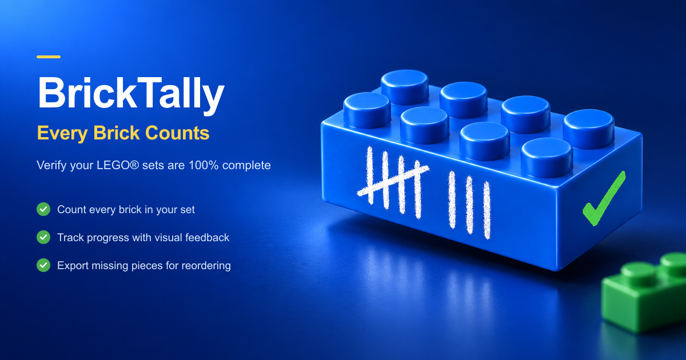
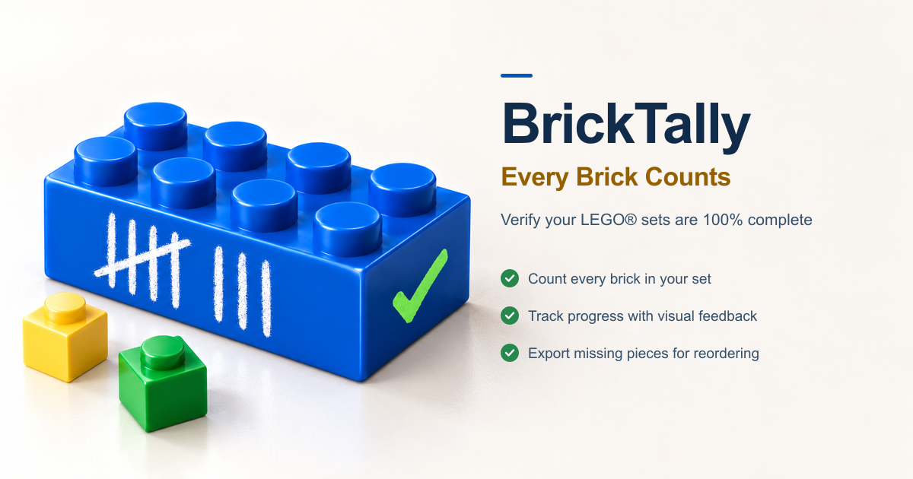
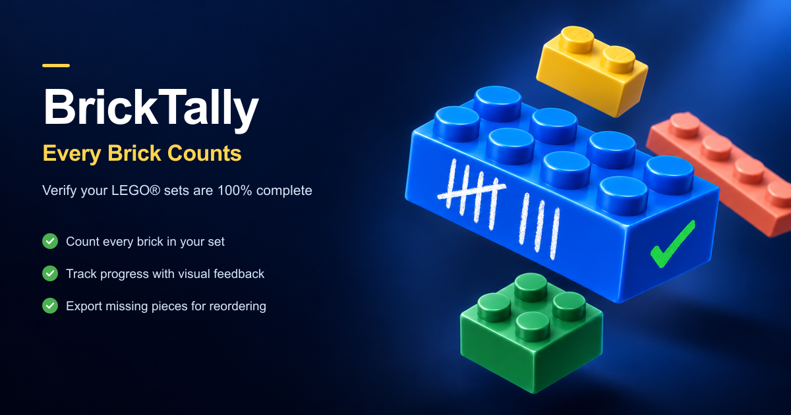
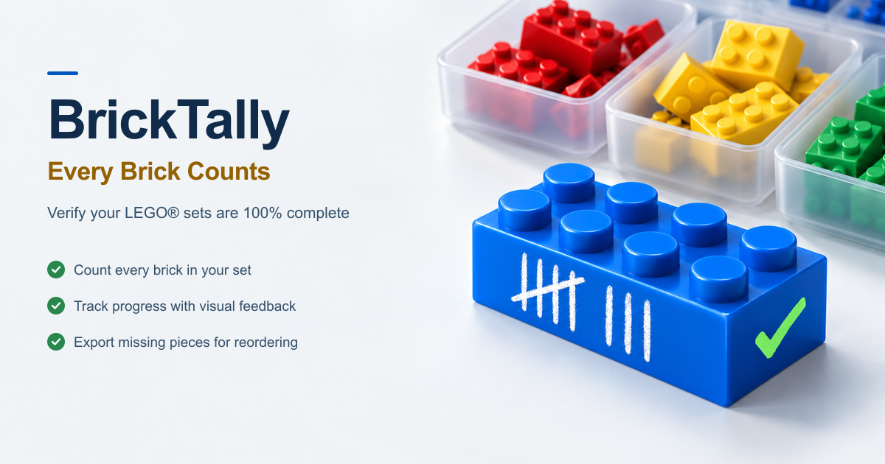
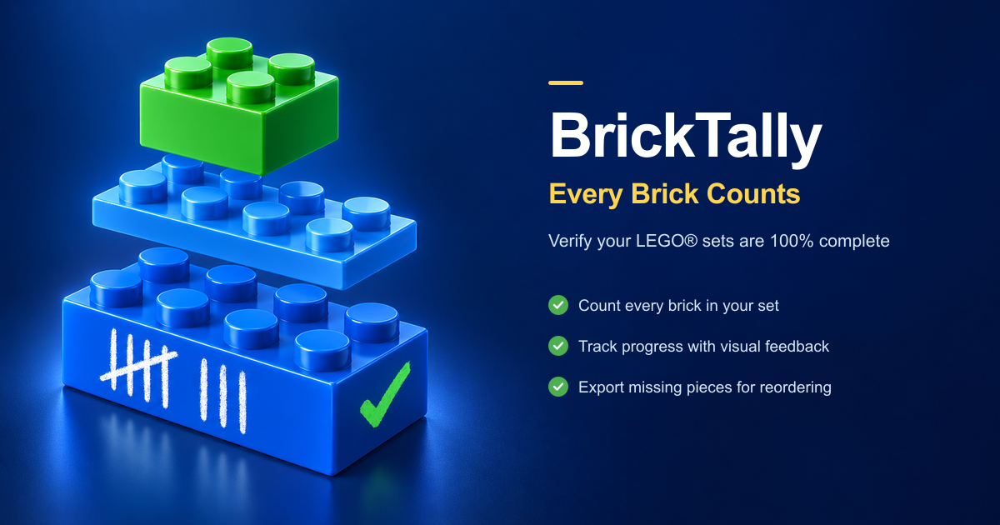
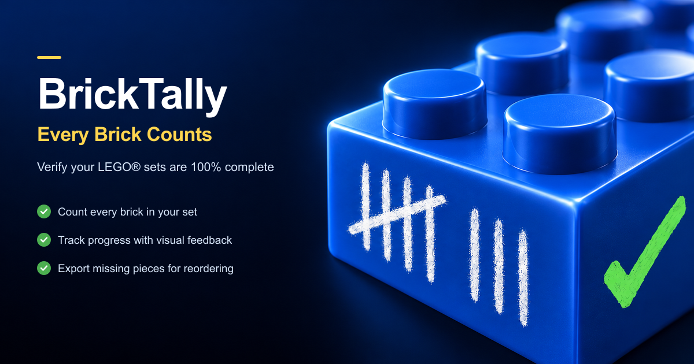
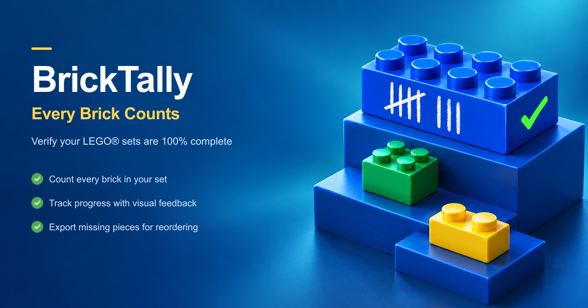
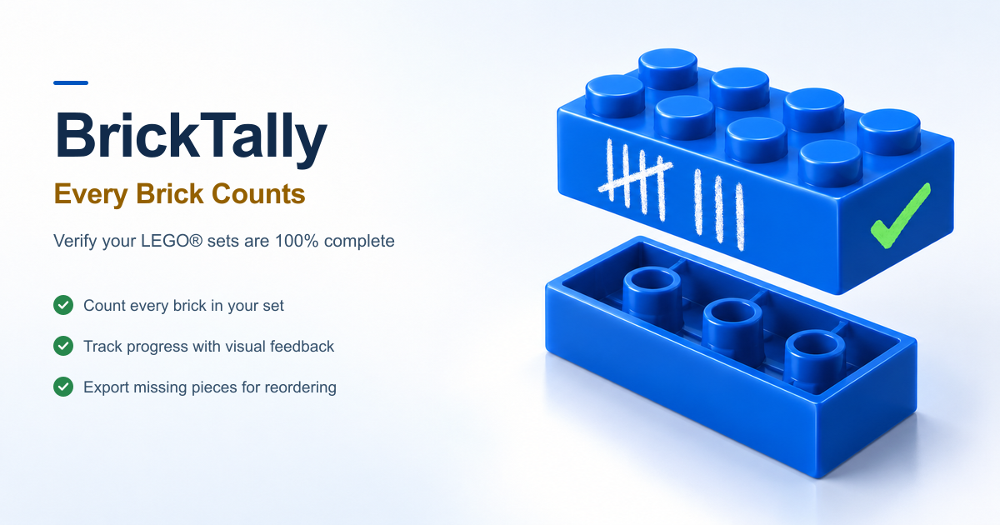
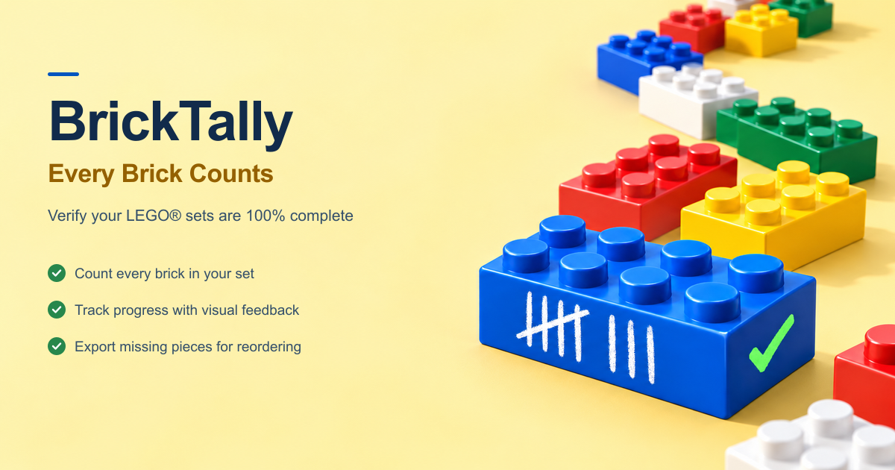
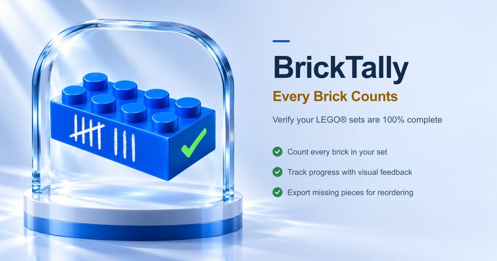

PKE / BRICKTALLY · OPEN GRAPH · 15.10.2026
Zehn neue 3D-Bildwelten für BrickTally.
Die Texte und der Claim sind in allen zehn Vorschlägen wortgleich zum bisherigen OG-Bild. Jeder Entwurf kombiniert ein eigens erzeugtes Imagegen-Rendering mit einer separat gesetzten, scharfen Textebene. Alle fertigen PNGs haben 1200 × 630 Pixel.
Beschriftete Gesamtübersicht · Alle Imagegen-Prompts · Format- und Textprüfung
Die Checkboxen dienen als Merkhilfe in dieser Ansicht und werden nicht gespeichert. Klick auf ein Bild öffnet den vollständigen OG-Export.

Ruhiges Studio-Rendering mit markantem blauem Hero-Stein.

Helle Produktfotografie auf einer warmen, reduzierten Fläche.

Schwebende Einzelteile und ein konzentriertes dunkles Farbfeld.

Farbsortierte Teile als direkter Bezug zur Inventur.

Ein Steckmoment als räumliche Explosions-Komposition.

Eine dramatische Nahaufnahme mit starker Materialwirkung.

Geordnete Stufen als Metapher für Fortschritt und Vollständigkeit.

Technische Ansicht mit sichtbarer Unterseite und Klemmröhren.

Ein farbiger Teilefluss auf warmem Hellgelb.

Eine zurückhaltende Produktinszenierung im Glasrahmen.